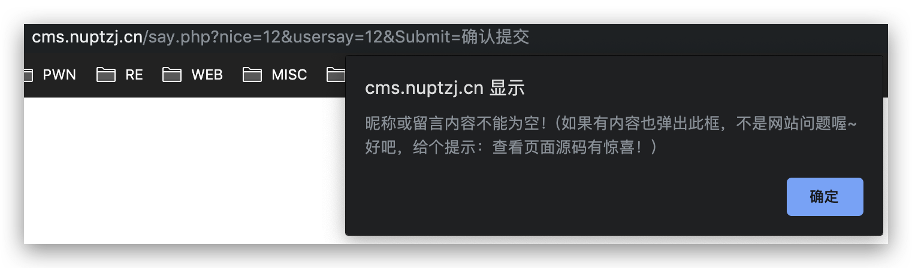
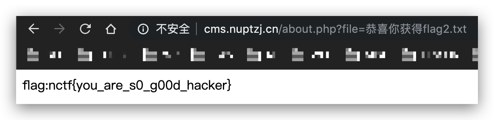

信息安全综合实践1期末作业
班级：安全1701 学号：1712190426 姓名：钱非凡
CGCTF-上传绕过
（知识点：文件上传）
（题目地址：http://teamxlc.sinaapp.com/web5/21232f297a57a5a743894a0e4a801fc3/index.html）
点开网站，是一个文件上传的界面：
尝试上传一个php后门，提示必须上传文件名为jpg、gif、png后缀的文件：
把名字修改成1.jpg再次上传，又提示必须上传文件名为php后缀的文件：

使用Burp Suite抓包，查看具体的request和response内容。当上传文件名为1.php时，会返回一个解析了后缀名的数组，应该是通过点来对文件名切割，然后将切割后的结果以数组的形式返回：
然后将文件名修改为1.jpg上传，看到上面和之前一样，返回了一个解析文件名的数组。然后下方又给了一个数组，其中返回了dirname、basename、extension、filename四个元素的值，可以发现dirname和左侧发送的文件上传目录/upload/有关系，也就是这边的数组应该是将文件上传的绝对路径（/upload/1.jpg）进行了解析：
因为第二步这里要求判断出是以php后缀的文件，想到可以用\x00来截断字符串这样可以在前面绕过jpg、gif、png后缀检测，在这里也可以绕过php的后缀检测。接下来，就想到尝试修改路径，在/upload/后面添加1.php%00，伪造文件名为1.php%001.jpg，同时将后面的jpg截断：
在发送了之后发现%00并没有把后面的jpg给截断，意识到了%00应该是url里参数的截断。那么需要将%00修改为ASCII码为0的\x00，在request下的hex标签中修改其十六进制为0：
最后点击发送，成功绕过，得到flag：
CGCTF-/x00
（知识点：PHP代码审计）
（题目地址：http://teamxlc.sinaapp.com/web4/f5a14f5e6e3453b78cd73899bad98d53/index.php）
打开网站，给了一段源码：
源码中要求通过GET方法传输nctf这一参数，要求必须是数字，同时字符串中必须有#biubiubiu这一字符串。那么直接想到的就是使用%00截断：
但使用的时候发现并没有成功绕过，然后意识到#在url中会被解释成位置标志符，而不会作为参数传到服务端，只会在客户端解析。采用十六进制的形式%23来进行绕过：
CGCTF-变量覆盖
（知识点：PHP代码审计）
（题目地址：http://chinalover.sinaapp.com/web18/index.php）
打开网站后，有一个提交密码的文本框，下方也给了源码：
点开后查看，网站界面中用POST方法上传了一个$pass变量，php代码中要求$pass和$thepassword_123两个变量相同，显然后面那个变量是在后端存储在secret.php中。同时发现这里调用了extract函数（从数组中将变量导入到当前的符号表），也就是说我们可以自行POST一个$thepassword_123，这样在执行了extract之后会将原本的值给覆盖，就能达到绕过的目的：
使用Burp Suite抓包，增加一个thepassword_123的赋值，并POST，得到flag：
CGCTF-SQL注入2
（知识点：SQL注入、PHP代码审计）
（题目地址：http://4.chinalover.sinaapp.com/web6/index.php）
打开网站，是一个登陆的界面，同时提供了php的源码：
源码中将提交的pass进行md5后，将提交的user作为查询语句查找数据库中对应的密码，并进行比较：
查询语句这里没有进行任何的过滤，可以进行注入。使用Burp Suite抓包，然后使用单引号将前面的部分闭合，然后使用联合查询返回一个哈希值，这里设置成1的md5值，然后将密码设置为1，得到flag：
CGCTF-综合题2
（知识点：PHP代码审计、SQL注入、一句话木马、本地文件包含）
（题目地址：http://cms.nuptzj.cn/）
打开网站后，前面部分是一段对网站的介绍，后面有留言搜索功能、留言功能和一个说明链接：
尝试留言搜索功能，返回这样一句话：
接着再看看留言功能，不能进行留言，提示查看源码，但没有什么发现：

然后再查看说明，提供了一些信息，后面可能会用到，包括几个php文件以及数据库中admin表的结构：
然后注意到了访问说明界面的方式，是传了一个file参数，来读文件：
尝试读一下about.php自己的源码，过滤了一个config.php（因为是数据库配置的一个文件），同时如果尝试读取loginxlcteam，会提示敏感目录：
访问loginxlcteam，是一个后台登录系统，没有任何信息可以登陆，弱口令也没有成功：
接下来回过头去再读一下前面留言搜索的源码。后端应该是对访问请求的USER-AGENT进行了判断，必须等于Xlcteam Browser。然后看到了另外两个文件，antiinject.php和antixss.php。最后还发现了留言搜索时的查询语句，且参数通过POST方法发送：
感觉这边是可以注入的，除了antiinject.php里可能对输入做了一些过滤，同样读一下antiinject.php的源码。看到如果这里面对一些关键字进行了替换，只要双写就能绕过，例如admin表中的name和pass等字符串，以及空格单双引号等等：
那么接下来就可以进行注入了。首先正常查询返回结果：
使用order by测试返回列数，order需要先绕过or的过滤，再绕过order的过滤，所以这里双写了or又双写了order：
在测试到5列时没有返回结果，说明共4列：
然后使用联合注入测试输出结果的列：
然后根据之前提供的信息，information_schema表无法查询，但题目已经提供了表admin和其中的列username以及userpass，直接把这两个值爆出来：
根据一开始的说明，密码是被passencode.php中的函数加密过的，查看一下文件内容，只是做了简单的ASCII码的转换：
用python解一下得到密码fuckruntu：
然后返回登陆的那个界面，登陆成功后给出提示：
还是一样，读一下小马的内容。REQUEST方法传一个www参数，然后POST方法传一个wtf的数组，最后调用了array_walk函数（对数组中的每个元素应用用户自定义函数。在函数中，数组的键名和键值是参数），有点类似python中map的用法：
在网上搜到了类似的代码，这里的array_walk是一个三个参数的回调函数，如果传入preg_replace函数可以执行代码：
使用上面的方式，传入preg_replace函数，然后读取当前目录下所有文件，可以看到一个放有flag的文件：
读取这个文件得到flag：

JarvisOJ-inject
（知识点：SQL注入、PHP代码审计）
（题目地址：http://web.jarvisoj.com:32794/）
打开网站后，没有发现任何信息泄漏或者提示的部分，使用dirsearch工具（https://github.com/maurosoria/dirsearch）扫描网站根目录，得到一个index.php~页面：
查看index.php~，首先通过GET方法传输一个table变量，如果没有传，就默认$table的值为test。然后通过尝试查询语句desc `secret_flag`，用来测试secret_{$table}这样一张表是否存在，如果存在，输出flag{xxx}；反之执行Hacker()函数：
在本地测试desc命令，当表存在时可以执行，反之会提示表不存在：
当后面跟上其他表时，只要第一个表存在，后面的即使不存在，desc命令也能正常执行：
当table=test时：
当table=123时：
跟据前面的php代码，只有前面的mysqli_query绕过后，才能对下面的部分进行注入。构造如下payload，把后面注入的语句伪装成一张表，能顺利执行desc；然后在后面执行的select语句中利用union联合查询进行注入，并用limit查看union后一条语句的返回内容：
接下来在爆表的过程中，发现不能正常的搜出理论上应该存在的secret_test表，然后注意到在where条件中使用了单引号，有可能是代码中的Filter函数对单引号过滤了：
将库名转成十六进制，绕过对单引号的过滤：
将表名secret_flag转换成十六进制得到列名：
得到flag：
JarvisOJ-Login
（知识点：PHP代码审计、SQL注入）
（题目地址：http://web.jarvisoj.com:32772/）
打开网站，没有发现任何信息，用Burp Suite抓包，发现Hint，给出了后端的SQL查询语句：

当md5函数的后一个参数设置成true的时候，会返回32位十六进制的长为16的字符串形式。如果可以找到字符串恰好以“（单引号）or（单引号）”开头，那就可以使语句中的where永真，就可以检测成功。可以搜索到字符串ffifdyop的md5值就是这个形式：
把pass设置为ffifdyop，绕过校验，登陆成功：
HackmeCTF-LFI
（知识点：本地文件包含、PHP伪协议）
（题目地址：https://hackme.inndy.tw/lfi）
打开网站后，看到url中有一个参数page：
login页面是一个登陆界面，应该这里是突破口：
访问了每个标签后没有什么收获，想到尝试使用php伪协议读取源码，一下子就把login的源码读出来了：
base64解码后得到login页面源码：
把哈希值拿去搜了一下得到密码：
登陆后得到flag：
HackmeCTF-guestbook
（知识点：SQL注入）
（题目地址：https://hackme.inndy.tw/gb/index.php?mod=home）
打开网站后Message List里显示空，在New Post尝试随便输入一点东西，尝试xss：
可以成功弹窗，但这道题里也没有admin什么的，利用不了xss：
点开Message List，发现url里的id是动态的，尝试对id进行sql注入：
用单引号闭合，显示无数据：
猜测应该不是字符串型的注入，尝试整型的注入。构造and 1=1，查询成功：
构造and 1=2，返回结果失败：
尝试联合注入，先判断返回的列数：
在第5列的时候报错，说明总共返回4列的数据：
查看返回数据的位置：
获取库名：
获取表名：
获取列名：
得到flag：
尝试使用sqlmap进行注入，检测出了联合注入，并共返回4列：
使用sqlmap获取flag：
HackmeCTF-xssme
（知识点：XSS）
（题目地址：https://xssrf.hackme.inndy.tw/）
打开网站，是一个邮箱系统：
注册并登陆后，可以看到admin发来的一个邮件：

邮件中提到admin会打开我们发送的所有邮件，但不会回复任何邮件：
那么这道题目的方向就基本比较明确，应该是通过xss来窃取admin的cookie，然后来获取权限。接下来尝试写邮件，会发现系统对文本中的一些输入做了过滤。比如过滤了script：
还过滤了onerror：
还过滤了onload：
过滤了一些比较常用的函数，搜了一下这里可以用svg/onload，他只是过滤了空格加onload，这里就不会过滤反斜杠加onload：
然后只需要把双引号里的内容改成弹cookie的就行了。接下来提示要经过POW才能发送邮件：
用python算一下哈希：
在发送之前，在vps上起个apache，用来接受弹的，然后写如下php代码（确保cookie.txt有全员写权限）：
然后构造如下payload：
发送恶意邮件后，admin会把cookie给反弹过来，flag就在cookie里：